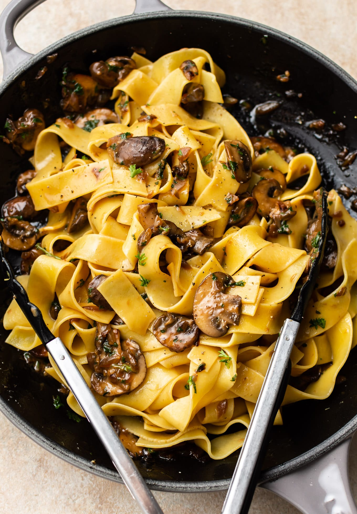

Mushroom Parmesan Pasta

This is what it should look like once complete!
Ingredients
- 4 oz uncooked pasta
- 3 tbsp butterdivided
- 1 tbspoon of olive oil
- 0.5 medium onion chopped
- 7 oz cremini mushrooms sliced
- 3 cloves of garlic minced
- 0.5 teaspon Dijon Mustard e
- .25 cup chicken broth or veg broth or white wine
- .5 teaspon lemon juice + zest of 0.5 lemon
- .5 cup freshly grated parmesan cheese
- 2 tbspn fresh parsley chopped
- S&P to taste
Steps
- Boil a salted pot of water and cook the pasta al dente according to
package directions.
- Meanwhile, prep your ingredients
- Add the oil and 1 tablespoon of the butter to a skillet over medium-high
heat. Once the pan is hot, add the onions and mushrooms. Sauté, stirring
occasionally, until the water has been released from the mushrooms &
cooked off and everything gets a good sear and is browned/caramelized
(this gives a ton of flavor). It'll take 8-10 minutes or possibly a bit
longer.
- Stir in the rest of the butter, plus the garlic and Dijon Mustard. Cook
for about a minute
- Add in the borth and lemon juice + zest and let it bubble for a minute
or so
- Take the pan off the heat and stir in the parmesan cheese and parsley.
Add a splash of the hot pasta water prior to draining the pasta
(a couple tablespoons) and then toss the pasta with the sauce. Season
with salt & pepper as needed and serve immediately.
Some Notes
- Prep time: 10 min
- Cook Time: 20 min
- Serves: 2
- Kcal per serving: 574